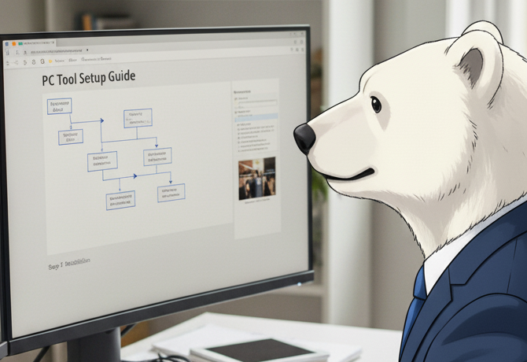
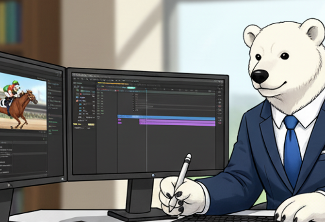
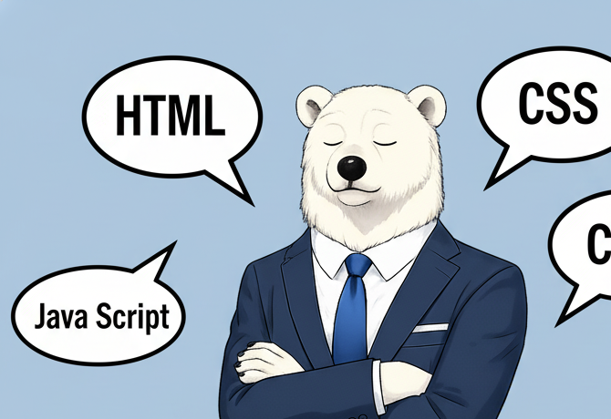
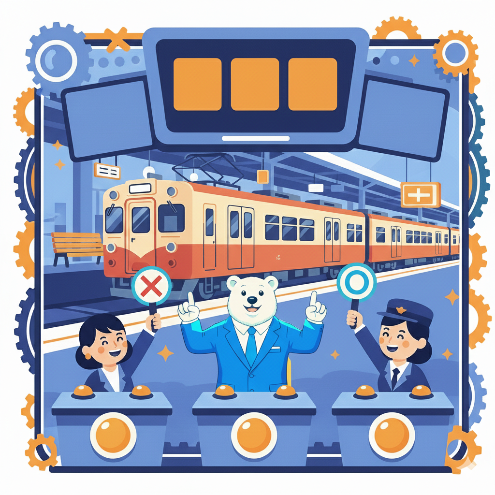
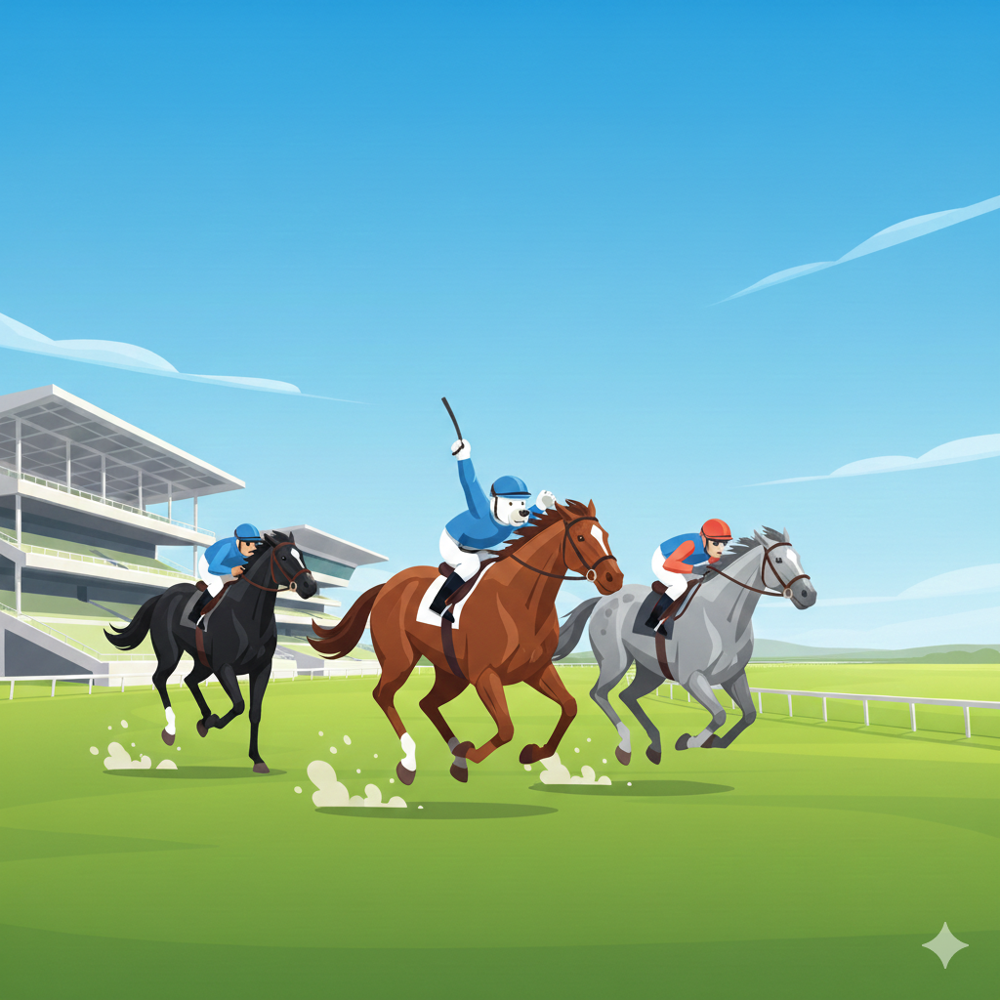
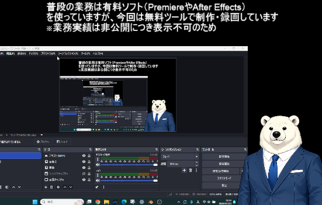

企業業務として担当した案件一覧です。
■収録・撮影業務
オーダー案件の収録・グループ従業員向けの講演イベントの収録

■社内ツール手順書作成
少人数向け業務マニュアル整備
※OBSで操作動画を撮り編集

■Premiere Proによる映像編集
動画編集・字幕制作(srt→VTT)・書出
After Effectも使用可。

■社内サイトの定期更新
半期ごとのイントラサイトの
更新作業をローテーションで担当
■運用・メンテナンス
SCORMデータ更新・改修対応
■新施策・改善
3D教材の施策（Blender）
新表現（スマホ収録）の推進
■社内資料用ピクトグラム集作成
チャッピーで作成しPhotoShopで整形
AFで動くピクトグラムも作成。
■イラスト作成
対話型アバターオリジナルイラスト作成
※チャッピーで作成しPhotoShopで整形
■アンケート調査
陳腐化対策・潜在不良の確認等
業務外で技術向上を目的として継続的に取り組んでいる制作物です。
表現力・設計力・検証力の向上を目的としています。

■ブラウザゲーム（JavaScript）
状態管理・条件分岐・UI制御を自作実装
ユーザー体験を意識した設計
※チャッピーとgeminiで作成
デモを見る

■レースシミュレーター（JavaScript）
条件分岐・確率処理
イベント制御を実装
視覚演出とゲームロジックを連動
※チャッピーとgeminiで作成
デモを見る

■blenderとOBSを使った動画作成
※普段の業務ではpremiere proとafter effectを使用
再生
| 分類 | 項目 | 仕様内容 |
|---|---|---|
| 画面構成 | レイアウト | 左ペイン（ノード管理）＋右ペイン（本文編集）の2カラム構成 |
| ノード構造 | 階層 | ツリー構造（親ノード／子ノード無制限追加可） |
| ノード構造 | 保持情報 |
・タイトル ・本文テキスト ・文字色 ・子ノード配列 ・折り畳み状態（open / close） |
| 左ペイン | 親ノード表示 | 常時表示・折り畳み可能（▼ / ▶） |
| 左ペイン | 子ノード表示 | 折り畳み可能・多階層対応 |
| 左ペイン | タイトル編集 | サイドバー上で直接編集可能（input形式） |
| 左ペイン | ノード操作 |
・親ノード追加 ・子ノード追加 ・ノード削除 |
| 右ペイン | 本文編集 | 大型textareaで編集・選択ノードに即時反映 |
| 右ペイン | 文字色変更 |
・カラーピッカー搭載 ・正方形プレビュー表示 ・ノード単位で色保持 |
| 選択仕様 | ノード選択 | 左ペインでクリック → 右ペインに内容・色を反映 |
| 保存機能 | 保存方式 | JSONファイルとしてローカルPCへ書き出し |
| 保存機能 | 読み込み方式 | JSONファイル選択により復元 |
| 動作環境 | 実行形式 | 単一HTMLファイル・サーバー不要・完全クライアントサイド動作 |